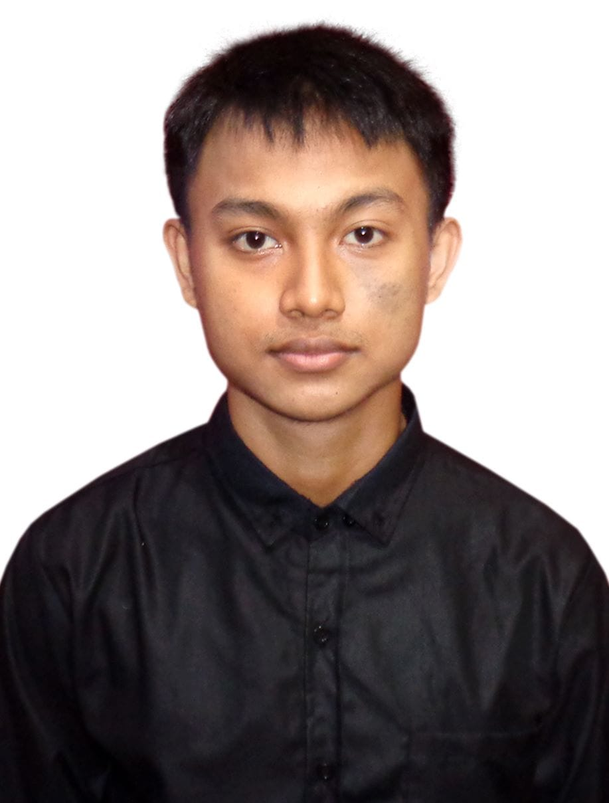

Rizky Aditya Saputra
Mechanical Technician & Mechanical Engineering Undergraduate
Lulusan sekolah menengah penerbangan (Airframe & Powerplant) dengan fondasi teknis mekanikal, inspeksi kualitas (QC/NDT), dan pemeliharaan mesin industri di PT Tifico Fiber Indonesia. Terbiasa bekerja presisi mengikuti standar keselamatan industri (LOTO), desain CAD 2D/3D, serta adaptif terhadap otomasi kerja.
Pengalaman Industri & Teknis
Maintenance Technician
PT. Tifico Fiber Indonesia Tbk
- Melaksanakan preventive & corrective maintenance pada mesin produksi industri untuk menjaga keandalan operasional.
- Menerapkan prosedur keselamatan kerja standar industri termasuk Isolasi Energi / Lockout-Tagout (LOTO).
- Melakukan troubleshooting mekanikal dan inspeksi komponen presisi untuk meminimalkan downtime fasilitas.
Quality Control Inspector
PT. Suprabakti Mandiri
- Melakukan inspeksi kualitas produk meliputi pemeriksaan dimensi presisi, visual, dan hasil pengelasan sesuai standar teknis.
- Melaksanakan uji Non-Destructive Test (NDT) meliputi Magnetic Particle Test (MPT) dan Penetrant Test.
- Berkoordinasi dengan tim fabrikasi dalam analisis akar masalah cacat produk (root cause) dan tindakan perbaikan.
Pendidikan
S1 Teknik Mesin
Universitas Pamulang
Airframe & Powerplant
SMKN 6 Tangerang (Penerbangan)
Keahlian & Tools
Sertifikat & Lisensi
Featured Projects
Maintenance AI Assistant
Aplikasi berbasis web untuk menyusun draf Work Order (WO) pemeliharaan mesin dan prosedur isolasi energi Lockout-Tagout (LOTO) secara terstruktur.
Personal Web Portfolio (rizkyas.my.id)
Sistem portofolio digital berarsitektur Bento Grid & Technical Blueprint yang responsif dengan fitur manajemen tema Light/Dark serta efisiensi akses dokumen CV.